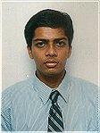

The following people have contributed to this project :
Somik Raha Extreme Programmer & Coach Industrial Logic Inc. 2583 Cedar Street, Berkeley, CA USA 94709 http://www.industriallogic.com somik@industriallogic.com Voice : 510.540.8336 |
Somik is the lead programmer and project manager of HTMLParser. He started the project while he was working at Kizna Corporation, Japan. He is thankful to Kizna for allowing him to open source the parser, as it was not what Kizna was making. Thereafter, hundreds of people wrote back, asking for modifications, giving design suggestions, bug reports, etc. and making the parser what it is today. The parser is truly a collaborative effort with people from different countries, companies, cultures. |
India is a massive multi-cultural nation, home to over a billion people, a hustling and bustling democracy. India has 27 states, and over 40 languages and dialects. Don't be surprised if you find two Indians communicating with each other in English - for that might be the only common language they share. Food in India is awesome, with each state having its own cuisine. India's population includes Hindus, Muslims, Christians, Jains, Buddhists, Jews, Parsees and many others. Two famous Indian exports are : Yoga and Software :) |
Kaarle Kaila Software Developer - Consult. Kalenteritie 23 B 4 02200 Espoo, Finland tel: +358-50-3725844 http://www.kk-software.fi kaarle.kaila@iki.fi |
Kaarle was one of the first users of the parser. He contributed a critical method - parseParameters(). This method is present today in the HTMLParameterParser class and it picks up all the attributes in a given tag. This method is surprisingly hard to write - as it handles various kinds of dirty html available, and it has proved to be the single most used method in the parser. Kaarle has used the parser in the J2EE extranet project at Nokia. |
Finland might today be best known for Nokia but we are not only that. Did you know that according to Forbes magazine the richest (imaginary?) person lives in Finland. Who might that be? Hint: he travels with reindeer and he is most active in christmas time. Perhaps you knew that the reindeer is a common domestic animal in northern Finland (Lapland). There's about 5 million of us here. We have more
than 60 000 lakes and much more small islands
both in the lakes and on the seaside. Some of
us (like me) have their own island. You can find
a picture of my island on my webpage if you look for it. Of course I have
a sauna on the island. |
|
Claude Duguay Arcessa, Inc. CDuguay@arcessa.com |
Claude made very important contributions to the parser, by doing massive scalability tests- bombarding the parser with over 5 million lines of html. The reports from his tests contributed greatly in improving the scalability of the parser. Claude also contributed greatly to the design of the parser - giving it a professional touch. Some of his important contributions include chained exceptions and the feedback mechanism. Claude Duguay has developed software for more than 20 years. He is passionate about Java, reads about it incessantly, and writes about it as often as possible. |
|
 |
Dhaval has made many valuable contributions to the parser. He helped stabilize the script scanner, provided numerous bug reports, and contributed the input, select, option and textarea scanners. He is also responsible for providing standardized end-of-line support - thus making the parser usable across Windows and Linux - which have different conventions for end-of-line characters. Read Dhaval's article on The Quest for HTMLParser. |
I've been passionate about computers from very early on. Started working I am a pretty recent entrant to Java programming with just
|
|
|
Sam Joseph is the creator of the Neurogrid Project, and uses HTMLParser in the Neurogrid. Sam gave valuable comments on the design of the HTMLParser - which have been greatly appreciated by many users. The idea of having a toHTML() method was his. Along with the ideas of toPlainString(), ..., supporting meta tags,.. Sam is into the mobile market and consults to several companies in Japan in this field. He also does research projects at Tokyo University. |
|
Cédric Rosa cedric.rosa@freesbee.fr |
Cédric was one of the most prolific testers of the parser, coming up with several bug reports daily. That went a long way toward making the parser really stable. | |
Raghavender Srimantula king_chiru@hotmail.com |
Raghav provided the Form and Frame scanners, apart from providing valuable bug reports. | |
Roger Sollberger rrabbit@gmx.ch |
Roger provided valuable bug reports, and helped to improve the StringNode parser - making it handle tag characters correctly. Roger is from Switzerland, and used the parser in his diploma thesis. |
|
Allen L. Fogleson Senior Project Manager Crunchy Technologies 2111 Wilson Boulevard Suite 350 Arlington, Va 22201 http://www.crunchy.com/ EMail : afogleson@crunchytech.com Voice : (703) 469-2032 Pager : (800) 826-3181 |
Allen was the first person to write back about the parser - his comments were a source of inspiration for us to go forward and make this a real product. He contributed the scanners for handling JSP and ASP tags. |
|
| Annette Doyle Annette.Doyle@ausinfo.com |
Annette has provided bug reports and fixes - particularly in scanning image tags. |
|
Nash Tsai nash@pocketnet.com.tw |
Nash helped with optimization and debugging issues. | |
Taras Bendik falcorus@mt.net.mk |
Taras has helped with internationalization issues - handling of unicode. Taras has also helped in testing, providing good bug reports and fixing them. Taras is from the land of Alexander, the Great - Macedonia. |
|
|
Arnaud Brejeon is a research engineer in the field of Computer Vision, who shares a passion in Java, when he has some free time away from C++. Arnaud spent valuable sessions pair-programming with Somik on the HTMLTag class- refactoring it - and providing a model of a class which was used for all the other base parsing classes. |
|
|
Joe gave an important suggestion - something that we had overlooked - handling the BASE tag while parsing links. He also submitted valuable bug reports that helped us improve the form and link scanners. | |
Rodney S. Foley |
Rodney made an important contribution to this project. HTMLParser initially used to have a complex mechanism of auto-registering scanners. Rodney first suggested that this should be done away with, as it was confusing. This single suggestion helped simplify the design of the parser. |
Thanks to Stephen Harrington, Domenico Lordi, Kamen, John Zook, Cedric Rosa,
Cheng Jun, Mazlan Mat, Rob Shields, Wolfgang Germund, Raj Sharma, Robert Kausch,
Gordon Deudney, Serge Kruppa, Roger Kjensrud, Rodney S Foley and Manpreet Singh
for suggestions, bug reports and feature ideas.